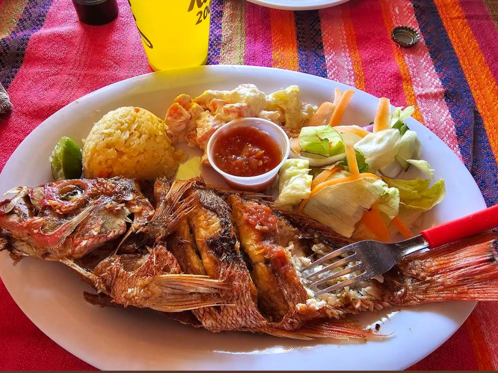
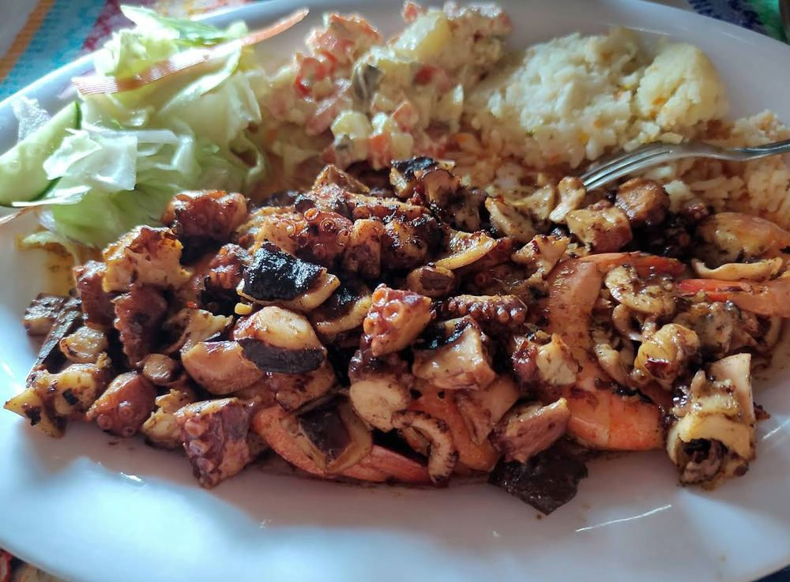
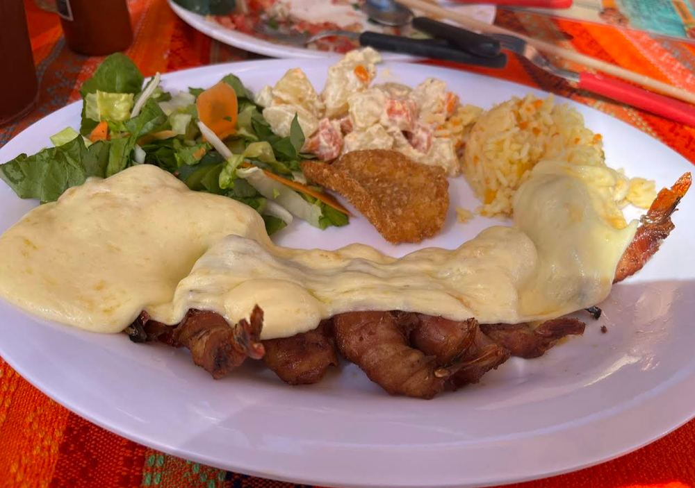
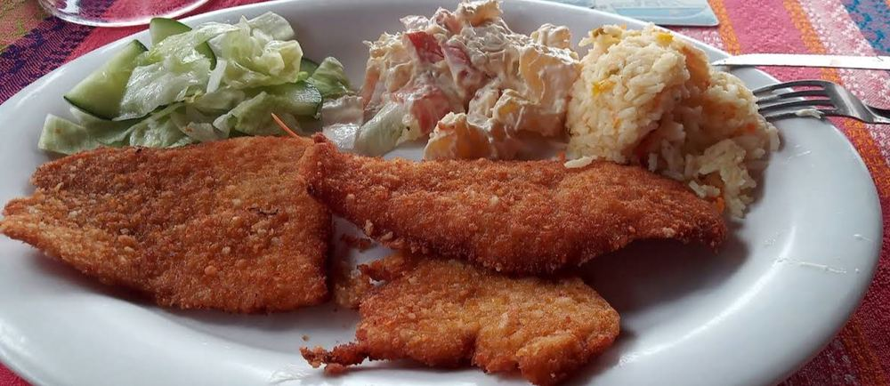
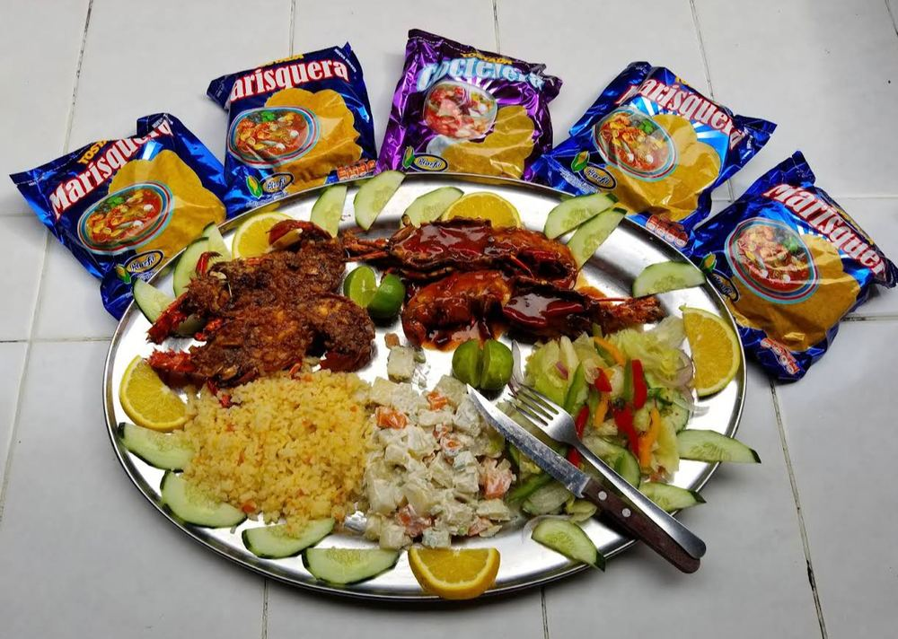
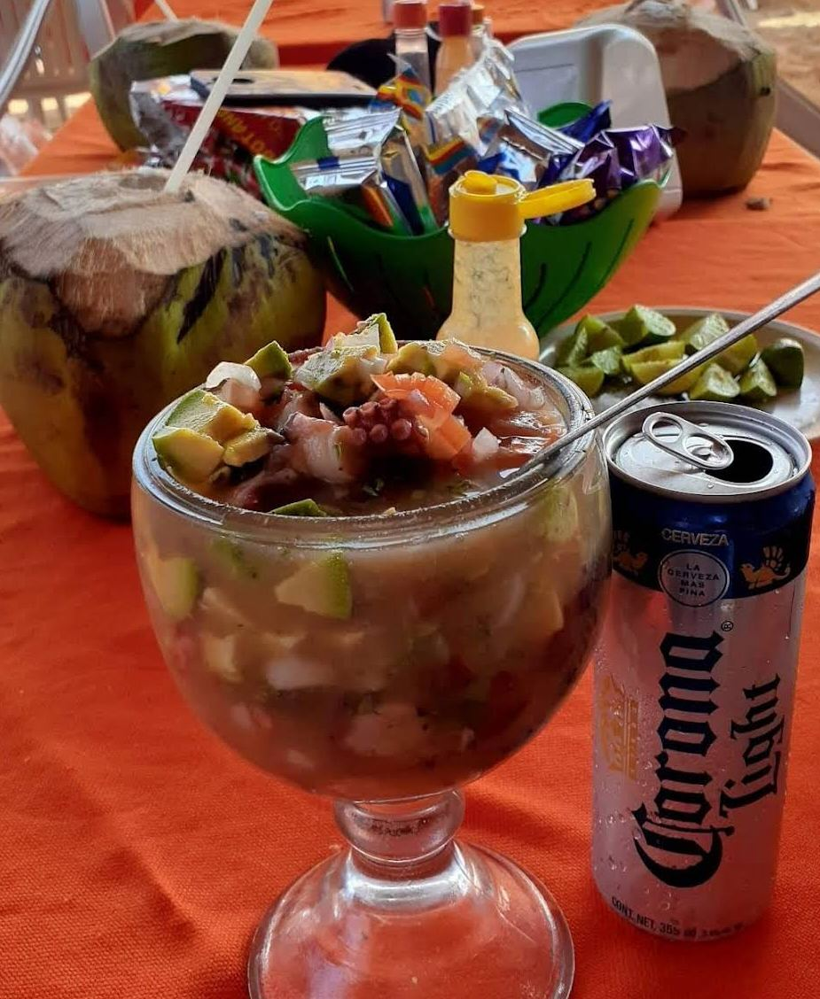

“El pescado zarandeado estaba increíble, se nota que todo es fresco. Comimos con los pies en la arena y una vista hermosa al mar. ¡Volveremos pronto!”
La Huerta, Jalisco
Mariscos frescos, recién salidos del mar, servidos frente a la playa. Ven a disfrutar del sazón costero que solo El Playón te puede dar.
Ver el menúSomos un restaurante familiar de mariscos ubicado justo en la playa de Punta Pérula. Preparamos cada platillo con pescados y mariscos frescos del día, en un ambiente relajado y sin prisas, ideal para turistas que visitan la costa de Jalisco y para las familias locales que nos visitan siempre. Ven con los pies en la arena, la brisa del mar y buena comida — así se disfruta El Playón.
Abierto todos los días: 11:00 a.m. – 8:00 p.m.
La mayor afluencia es alrededor de las 6:00 p.m., pero normalmente no hay espera.
Una probadita de lo que te espera en El Playón






“El pescado zarandeado estaba increíble, se nota que todo es fresco. Comimos con los pies en la arena y una vista hermosa al mar. ¡Volveremos pronto!”
“El ceviche El Playón es una explosión de sabores. Ambiente muy relajado y el servicio fue muy amable en todo momento.”
“Un lugar perfecto para desconectarse. Los camarones a la diabla tienen justo el picor ideal. Precios justos para la calidad que ofrecen.”
Punta Pérula, La Huerta, Jalisco, C.P. 48869, México
Todos los días, 11:00 a.m. – 8:00 p.m.
Cómo llegar